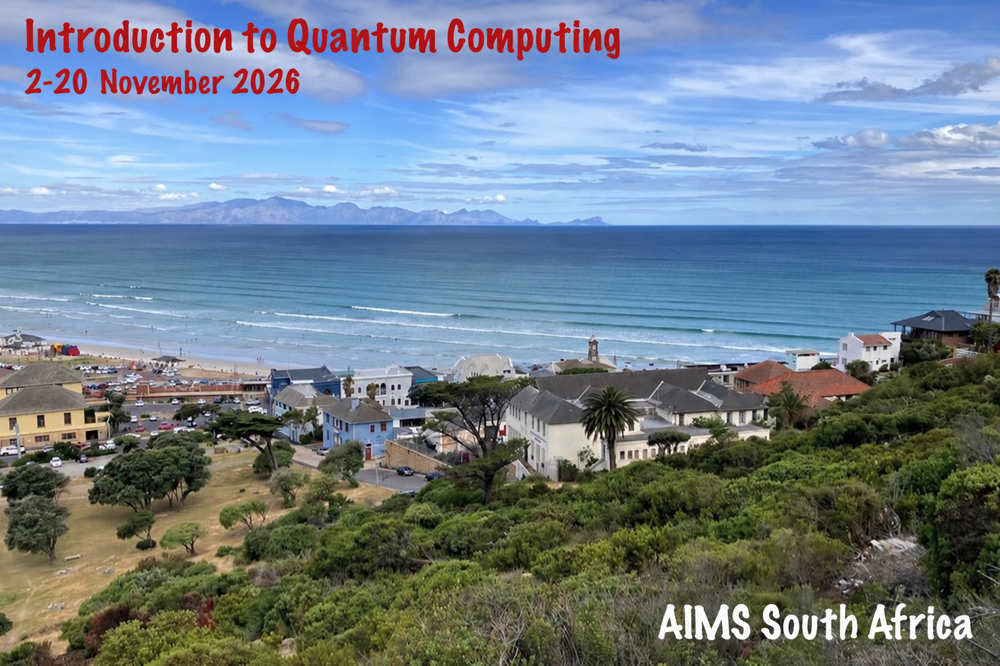

Welcome to the website for the AIMS "Intro to Quantum Computing" Course 2026, taking place between the 2nd of November and the 20th of November 2026. This course is taught by Ryan Sweke, who can be reached at rsweke@aims.ac.za. Additionally, the tutors for this course are
In addition to the daily lectures, there will be at least one "Question and Answer" sessions for this course every week. The time for these question and answer sessions will be discussed in class and then announced here.
Apart from providing an introduction to the fundamentals of quantum computing, quantum information and quantum many-body physics, this course is meant as preparation for the "2nd AIMS Workshop on the Theory of Quantum Learning Algorithms", to be held at AIMS South Africa from the 30th of November till the 3rd of December.